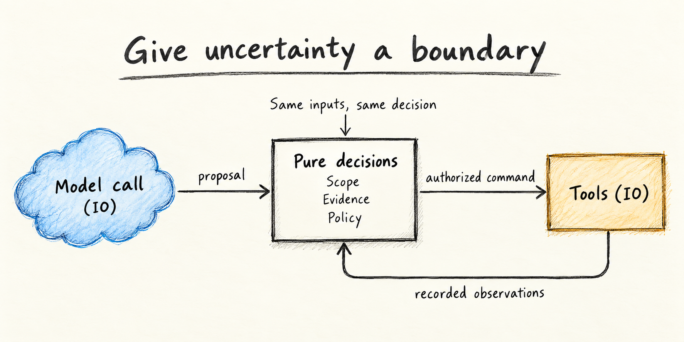
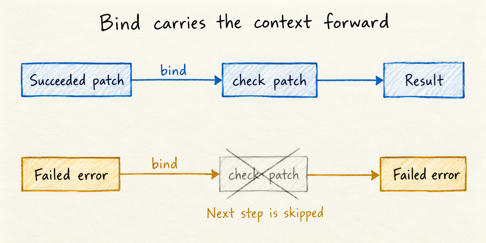
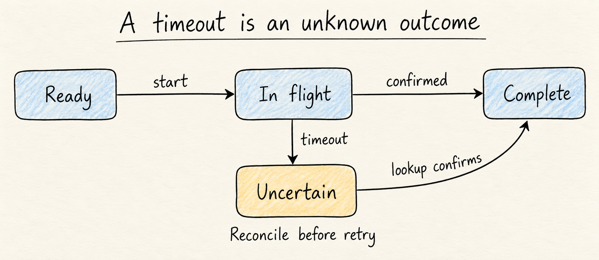

What functional programming taught me about agentic systems
Consider an agent that updates a dependency in a service, runs the required checks, and opens a pull request. The pull request is created, but the response never reaches the agent. The tool call times out. What should happen next?
Retrying sounds reasonable until it creates a second pull request. Asking the model to reason harder doesn't establish whether the first operation succeeded. The system needs a record of the operation and a way to reconcile that record with the outside world.
This is the kind of problem that makes functional programming feel relevant to agentic system design.
I used to be a very passionate functional programmer. I went deep with Haskell. I enjoyed Elixir too, and think it's a great language, though my preference was always for pure functional programming. I even explored Elm for a time. Its model-view-update architecture influenced Redux, which brought those ideas into the React ecosystem. Redux's account of its influences
The appeal had two parts. One was thinking in a rich type system: expressing the shape of a problem in types, then letting the compiler help check that the pieces fit together. Haskell's Hindley-Milner foundation, extended with type classes, made that especially compelling. Type inference meant I could work with polymorphic functions without spelling out every type along the way. Haskell 2010 report, section 4.1
The other was equational reasoning. With pure code, I could substitute an expression with its value and reason about a larger computation through smaller equalities. I didn't have to mentally execute the whole application and track hidden mutations to understand a local transformation. There was something deeply appealing about code I could approach mathematically.
Those two habits matter when designing agentic systems. Types help express what a workflow step is allowed to consume and produce. Purity gives us parts of the system whose behavior we can reason about independently. A model call introduces uncertainty, but the rules around its result can still be explicit and precise.
Once a proposed action can change a repository or a customer record, that precision has practical consequences. We need to know what evidence permits the action, what state changes when it runs, and what happens if we never receive confirmation.
Give uncertainty a boundary

Model calls and tools perform effects. Decisions consume explicit proposals and recorded observations; the drawing summarizes the proposed boundary.
A pure function returns the same result for the same inputs and has no observable side effects. That makes it possible to reason about a piece of a program without reconstructing everything happening around it.
A model call belongs at an effect boundary. Its response can vary, and it depends on a service outside the program. Even if a particular configuration produces repeatable responses, treating it as a pure function would hide dependencies that matter when the system fails.
The useful design move is to separate that call from the rules that consume its result. Haskell makes this distinction explicit through IO: constructing and composing an action is different from performing it. Haskell report: basic I/O
Follow that dependency update through the workflow. The model interprets the release notes and proposes changes to package.json and its lockfile. Applying that proposal in an isolated checkout produces a specific revision, which every later check and approval must identify. Ordinary code can check whether the target repository is allowed, whether the patch touches prohibited files, and whether the required tests passed against that exact revision.
Those checks can take explicit inputs and return explicit decisions. They don't need another model call to decide whether a test exit code was zero.
In Haskell, that boundary is visible in the signatures. These examples use abbreviated domain types and omit API clients and persistence implementations so the workflow remains readable.
-- Calling the model interacts with an external service.
proposePatch :: Task -> IO (Either WorkflowError ProposedPatch)
-- Checking the proposed scope only examines supplied values.
validateScope :: Policy -> ProposedPatch -> Either WorkflowError ScopedPatch
-- Applying a patch and running tests interact with the environment.
runChecks :: ScopedPatch -> IO CheckReport
-- Accepting the report is another pure decision.
acceptChecks :: ScopedPatch -> CheckReport -> Either WorkflowError CheckedPatchacceptChecks must verify that the report identifies the same resulting revision and the required checks all passed. The IO signatures make external interaction visible; the pure signatures make a narrower promise about what those functions can depend on.
That leaves a smaller part of the system exposed to uncertainty. It also gives us a useful place to investigate a failure: did the model produce a bad proposal, did a tool fail, or did the acceptance rule allow something it should have rejected?
Reason about the decision with equations
For the dependency update, suppose the publication rule requires passing tests, a passing security check, and approval for the same revision. This deliberately small policy is a pure function:
publicationAllowed :: Revision -> CheckReport -> Approval -> Bool
publicationAllowed rev report approval =
evidenceMatches rev report
&& testsPassed report && securityPassed report
&& approvedRevision approval == rev && approvalGranted approvalGiven rev = Revision "dependency-update-abc123", a report for that revision with both checks passing, and a matching approval, we can expand the definition:
publicationAllowed rev report approval
== (True && True && True && True && True)
== TrueThese lines show equalities for those fixed inputs, rather than a program that performs publication. Within that policy calculation, we can replace evidenceMatches rev report with True without changing its meaning. If approval refers to an older revision, the corresponding equality becomes False, and so does the decision. No repository or model service needs to be running to understand why.
Recorded inputs let us evaluate the same rule later. If the rule itself changes, we can also compare the old and new decisions against the same evidence. That makes a policy regression easier to investigate.
The boundary matters: proposePatch task describes an I/O action, not a patch value that we can substitute into the calculation. Performing that action twice can produce different proposals. Equational reasoning about pure code does not grant repeatability to external actions. And a true policy result establishes only that the supplied evidence meets this rule; the runtime still has to establish that the evidence is trustworthy and current.
Composing work that can fail
Monads are often taught with more ceremony than the practical idea needs. Start with a problem: ordinary function composition works when one function produces exactly the value the next function expects. If f :: a -> b and g :: b -> c, we can compose them as g . f.
But suppose both functions can fail. Now their signatures are f :: a -> Either Error b and g :: b -> Either Error c. The output of f no longer matches the input of g. At every connection, we have to inspect the result, preserve an error, or pass a successful value onward. A longer workflow repeats that plumbing at every step.
A monad gives us a consistent way to compose dependent computations while preserving their context. In this example, the context is possible failure. Other contexts include optional values, state, and external I/O. Each has its own rules for what happens between steps.
The two central operations are pure, which puts an ordinary value into the context, and bind, written >>=, which connects a contextual result to the next computation:
pure :: Applicative m => a -> m a
(>>=) :: Monad m => m a -> (a -> m b) -> m bFor this discussion, read m a as "a computation in context m that can produce an a." A failed computation may produce no a at all. Bind lets the next computation depend on that a, while the implementation of m decides how the surrounding context behaves. In modern Haskell, pure belongs to Applicative, which every Monad must also implement.
Here is a small failure-handling monad. It behaves like Either, with names chosen to make the example easier to read:
data Result e a = Failed e | Succeeded a
deriving (Eq, Show)
-- Functor and Applicative instances appear in the optional note below.
instance Monad (Result e) where
Failed err >>= _ = Failed err
Succeeded x >>= next = next x
Two paths through the custom Result instance: continue with the successful value, or propagate the existing error.
The last two lines contain the sequencing rule: failure skips the next computation; success supplies its value to it. The optional note at the end supplies the supporting instances needed to compile this definition.
We can use that rule directly:
checkProposal :: Policy -> ProposedPatch -> Result WorkflowError ScopedPatch
checkProposal policy patch =
case validateScope policy patch of
Left err -> Failed err
Right scoped -> Succeeded scoped
scopeProposal
:: Policy -> Result WorkflowError ProposedPatch
-> Result WorkflowError ScopedPatch
scopeProposal policy proposal = proposal >>= checkProposal policySucceeded patch passes our dependency update to checkProposal. Failed err preserves the earlier error and skips scope validation. Neither path performs publication. The monad defines the connective behavior, while checkProposal contains the domain rule.
There are laws behind this abstraction. Introducing a value with pure and immediately binding it to a function must behave like calling that function directly. Binding a computation to pure must preserve it. Regrouping a chain of binds must preserve its meaning without changing the order of dependent steps. These laws make composition predictable; Haskell's type checker does not prove that a custom instance obeys them. Haskell's Monad documentation
That is the reason for the abstraction: define the sequencing behavior once, then reuse it throughout a workflow and through generic combinators. Production Haskell already provides Either for this failure-handling case. Maybe handles possible absence, while IO represents external actions. Haskell uses monadic composition to integrate I/O with its pure language. Haskell 2010 report, chapter 7
These guarantees have limits. Monads don't make a model deterministic. They don't make an API call safe to retry, either. The list monad's representation of multiple possibilities is also different from sampling a response from a language model. The connection is about composing computations while keeping their context visible. A monad is not a scheduler: concurrency, timeouts, and retry policies still need concrete implementations.
For an agent workflow, a step might return a successful proposal, a recoverable tool failure, or a request for human input. The next step should depend on which result occurred. A missing approval cannot quietly become an empty string that the next prompt interprets however it likes.
We don't need to implement a monad transformer stack to benefit from this. We do need a consistent answer to what each step returns and how that result controls the next step.
Start with the pure part. Suppose publication requires a valid scope, passing checks, and approval for the checked revision. Using the standard Either type, the same dependency update moves through three checks:
preparePublication
:: Policy
-> ProposedPatch
-> CheckReport
-> Approval
-> Either WorkflowError AuthorizedPatch
preparePublication policy proposal report approval = do
scoped <- validateScope policy proposal
checked <- acceptChecks scoped report
authorize checked approvalThis do block uses the Either monad. A Left from scope validation skips the remaining steps and preserves the error. A Right passes its value to the next step. The helpers translate their specific errors into the shared WorkflowError type.
Separate independent checks from dependent steps
Tests and a security scan can both inspect the dependency update's applied revision. Neither needs the other's result. A publication decision, however, depends on their results and the approval. That difference should appear in the workflow.
For independent inputs, Applicative composition is enough:
collectReport
:: Revision -> IO Bool -> IO Bool -> IO CheckReport
collectReport rev testAction securityAction =
CheckReport rev <$> testAction <*> securityActionCheckReport has fields for the revision, the test result, and the security result. Here <$> applies its partially filled constructor to the first result, and <*> supplies the second. Neither action is constructed from the other's returned value. The ordinary IO instance still sequences these actions; this syntax does not make them concurrent. Applicative documentation
If the tools can safely run together, concurrency is a separate, explicit choice:
import Control.Concurrent.Async (concurrently)
collectReportConcurrently
:: Revision -> IO Bool -> IO Bool -> IO CheckReport
collectReportConcurrently rev testAction securityAction = do
(testsOK, securityOK) <- concurrently testAction securityAction
pure (CheckReport rev testsOK securityOK)The async library supplies the scheduling and exception-handling behavior here. Control.Concurrent.Async These examples assume each action has already been bound to the named immutable revision. Tests that write generated files may require separate checkouts; a shared revision label alone doesn't prevent interference.
By contrast, acceptChecks scoped report must wait for the report, and authorize checked approval needs the resulting checked patch. Bind expresses that dependency in preparePublication. The agent-system lesson is practical: run independent observations together where safe, then join their evidence before allowing a consequential action.
Describe the action before executing it
Another useful functional programming habit is representing work as data.
An agent can produce a proposed action containing a tool name, arguments, and the revision it expects to modify. The runtime can inspect that proposal before executing it. It can check permissions, attach an operation identifier, and reject stale assumptions.
The distinction is concrete: a proposal to open a pull request should be inspectable before the request is created.
Here is a small command type for the publication boundary:
data PublishCommand = OpenPullRequest
{ operationId :: OperationId
, repository :: Repository
, revision :: Revision
, title :: String
}
-- Pure: describe the requested operation.
planPublication :: OperationId -> AuthorizedPatch -> PublishCommand
-- Effectful: execute it through the remote service.
executePublication :: PublishCommand -> IO PublishResultConstructing an OpenPullRequest value creates no pull request. It gives the runtime something it can validate and persist before execution. The executor must also enforce credentials and policy at the tool boundary; having a command value is not itself permission to run it.
For a coding workflow, the sequence might look like this:
model response
→ parse proposed patch
→ validate scope
→ apply in an isolated checkout
→ run required checks
→ record evidence against the resulting revision
→ evaluate publication policy
→ execute the authorized actionThis is a proposed architecture, not a claim that each arrow is pure. Applying a patch and running tests are effects too. The point is that the system names them and gives each one a contract.
It also creates a way to test workflow rules without performing the real action. A test interpreter can return a timeout or a permission failure. We can then check that the workflow stops or reconciles state as intended, without creating a real pull request.
Make invalid transitions difficult
Haskell encourages you to represent distinctions in types. Agent workflows benefit from the same discipline.
A patch, a checked patch, and a patch authorized for publication are different things. Passing all three around as a generic task object with optional fields makes the distinctions easy to lose.
A more explicit model might describe the workflow like this:
ProposedPatch → CheckedPatch | CheckFailure
CheckedPatch → AuthorizedPatch | AwaitingApproval | Rejected
AuthorizedPatch → Published | PublicationUnknown | PublicationFailedPublicationUnknown deserves its own state. It captures the opening example: the request may have succeeded even though the caller received no confirmation. Treating that as an ordinary failure invites a blind retry.
Types can help enforce the allowed transitions inside the program. They cannot establish that a model's claim is true or that an external service obeyed the contract. Untrusted inputs still need runtime validation. The evidence behind a CheckedPatch must refer to the actual patch being published; a check against an earlier revision isn't enough.
The benefit is having fewer places where the program can accidentally skip a required decision.
A small module can enforce that distinction without advanced type machinery:
module Workflow
( CheckedPatch, AuthorizedPatch
, acceptChecks, authorize, planPublication
-- Other public domain types omitted here.
) where
-- Constructors are private to this module.
newtype CheckedPatch = CheckedPatch ScopedPatch
newtype AuthorizedPatch = AuthorizedPatch CheckedPatch
acceptChecks
:: ScopedPatch -> CheckReport
-> Either WorkflowError CheckedPatch
-- Implementation validates checks and their revision.
authorize
:: CheckedPatch -> Approval
-> Either WorkflowError AuthorizedPatch
-- Implementation checks approval for the checked revision.
planPublication :: OperationId -> AuthorizedPatch -> PublishCommand
data PublishResult
= Published PullRequestId
| PublicationUnknown OperationId
| PublicationFailed StringThis is a module interface sketch; the function bodies are omitted. Importing code cannot construct an AuthorizedPatch directly or pass a ProposedPatch to planPublication. The private implementation is responsible for checking the evidence and binding approval to that revision. If approval can expire or be revoked, the executor must revalidate it at execution time. The companion uses a fixed approval snapshot to keep that separate production concern out of the demonstration. This use of hidden constructors is Haskell's ordinary support for abstract data types, rather than a guarantee supplied by the model. Haskell report: abstract data types
Replay the record, then decide what to retry

Publication attempt states from the reducer below. A timeout records uncertainty; reconciliation can establish completion. The sketch omits definite failure paths.
Immutable state is another useful connection. An agent conversation is a poor substitute for an authoritative execution record.
Keep the accepted proposal and the observed tool results. Record which revision was checked and what happened when publication was attempted. Build the current workflow state from those facts, using a defined transition function.
Elm offers a familiar way to think about this: a model holds state, and an update function consumes messages to produce the next state. The agent workflow can apply the same separation to tool observations. Persistence and recovery are additional requirements; the Elm pattern alone doesn't provide them. The Elm Architecture
A minimal history for the publication attempt can be reduced with a pure function:
import Control.Monad (foldM)
data PublishState
= Ready
| InFlight OperationId
| Uncertain OperationId
| Complete OperationId PullRequestId
deriving (Eq, Show)
data PublishEvent
= Started OperationId
| TimedOut OperationId
| Confirmed OperationId PullRequestId
step :: PublishState -> PublishEvent -> Either String PublishState
step Ready (Started op) = Right (InFlight op)
step (InFlight expected) (TimedOut op)
| expected == op = Right (Uncertain op)
step (InFlight expected) (Confirmed op pr)
| expected == op = Right (Complete op pr)
step (Uncertain expected) (Confirmed op pr)
| expected == op = Right (Complete op pr)
step _ _ = Left "Invalid publication transition"
replay :: [PublishEvent] -> Either String PublishState
replay = foldM step ReadyA timeout leaves the operation uncertain. A later confirmation can resolve it. Mismatched operation identifiers and invalid event orderings return an error. A production event store also needs durable, ordered appends and concurrency control; this reducer only demonstrates how recorded facts determine state.
That gives us a way to replay the coordination logic with recorded observations. Calling the model again is a new generation attempt, with a potentially different answer. Replaying a recorded response serves a different purpose: understanding why the workflow made a particular decision.
Temporal illustrates a related boundary in durable execution. Its workflow definitions must be deterministic so execution can be reconstructed from history; external effects belong in activities whose results are recorded. This is a useful engineering reference for the separation, even when a system uses a different runtime. Temporal workflow documentation
Recovery still needs care. An external operation can succeed before its completion is recorded. Temporal's activity documentation describes that failure window and recommends idempotent activities. Activity definitions
For the pull request example, persist an operation identifier before publication and provide a way to find the resulting pull request using that identifier. After a timeout, reconcile with the remote service before creating another one. Where the service supports an idempotency key, use it. Where it doesn't, design the recovery path around that limitation. AWS's Builders' Library describes how caller-supplied request identifiers let a service recognize retries of the same intended operation. The service must implement that contract; adding an identifier locally doesn't provide deduplication. Making retries safe with idempotent APIs
For an uncertain publication, the recovery path can perform a lookup without issuing another create request:
data LookupResult
= Found PullRequestId
| NotFound
| LookupUnavailable String
data RecoveryDecision
= Resolved PullRequestId
| NeedsReconciliation OperationId
recoverPublication
:: (OperationId -> IO LookupResult)
-> OperationId
-> IO RecoveryDecision
recoverPublication lookupRemote op = do
result <- lookupRemote op
pure $ case result of
Found pr -> Resolved pr
NotFound -> NeedsReconciliation op
LookupUnavailable _ -> NeedsReconciliation opNotFound alone doesn't authorize a retry: the original request might still be in flight, or the lookup might lag behind the write. Retrying requires an additional guarantee, such as remote deduplication with the same operation key. The runtime should persist a confirmation event once recovery resolves the operation.
Pure coordination logic makes recovery easier to reason about. The external effect still needs its own recovery design.
Isolate workers and recover their state
My preference for pure FP doesn't diminish what Elixir brings to this discussion. Its Erlang foundation puts process isolation and failure handling close to the center of system design. Elixir's processes run concurrently and communicate through messages, as its own documentation explains. Elixir: processes Armstrong's thesis develops the underlying Erlang approach to isolation and failure handling. Making reliable distributed systems
There is a useful lesson there for systems with several agents: give each worker a defined responsibility and communicate through explicit messages. For our dependency update, one worker can interpret release notes and prepare the candidate patch. Test workers return evidence for its revision; the coordinator owns the decision to open the pull request. Shared mutable context makes those responsibilities harder to follow.
Isolation also needs to exist in the resources the workers use. Two separate conversations editing the same checkout still share mutable files. Give concurrent workers separate checkouts or another explicit ownership mechanism.
Restarting a worker doesn't undo its external effects. A restarted agent needs to recover the execution record before deciding what remains to be done. Otherwise supervision can repeatedly trigger the same mistake.
Use the abstraction where it earns its place
There is a temptation, especially if you enjoyed Haskell, to turn these connections into an elaborate framework. A small workflow may only need tagged result types and a few explicit transitions. Persistence and more sophisticated effect handling should answer actual recovery needs.
The practical starting point is one action that can change the outside world. Describe it as data. Define the evidence and authority required to execute it. Decide how the system will discover whether it happened after a timeout.
That is where functional programming has something useful to say about agents. We can give uncertain computations a precise place in a system, then make the decisions around them understandable enough to inspect, test, and repair.
Try the workflow
The companion example implements the dependency-update types, the pure decisions, the custom Result monad, and simulated publication and recovery. From its examples directory, run:
runghc -i. Main.hsIt uses only base. Its scenario checks cover successful authorization, rejected scope, failing tests, stale evidence, missing or stale approval, a publication whose response is lost, and unresolved lookups. They also check that a failed Result skips its continuation and exercise representative monad-law cases. Those finite checks illustrate the laws; they do not prove them for every input.
The remote service is an in-memory simulation. The example performs no real model calls, repository changes, or network writes. It does not provide durable storage, production authorization, or a concurrent tool runner. The concurrency snippet above uses the separate async package. No local Haskell compiler was available during preparation, so the companion is supplied as complete source with scenario checks, but has not been compiled or executed here.
Optional Haskell detail: the supporting Result instances
Modern Haskell requires every Monad to also be an Applicative, and every Applicative to be a Functor. These instances complete the earlier Result definition:
instance Functor (Result e) where
fmap _ (Failed err) = Failed err
fmap f (Succeeded x) = Succeeded (f x)
instance Applicative (Result e) where
pure = Succeeded
Failed err <*> _ = Failed err
Succeeded f <*> result = fmap f resultfmap transforms a successful value while preserving failure. pure constructs success; <*> applies a successful function to a contextual argument and propagates failure. The complete definition is in Result.hs.